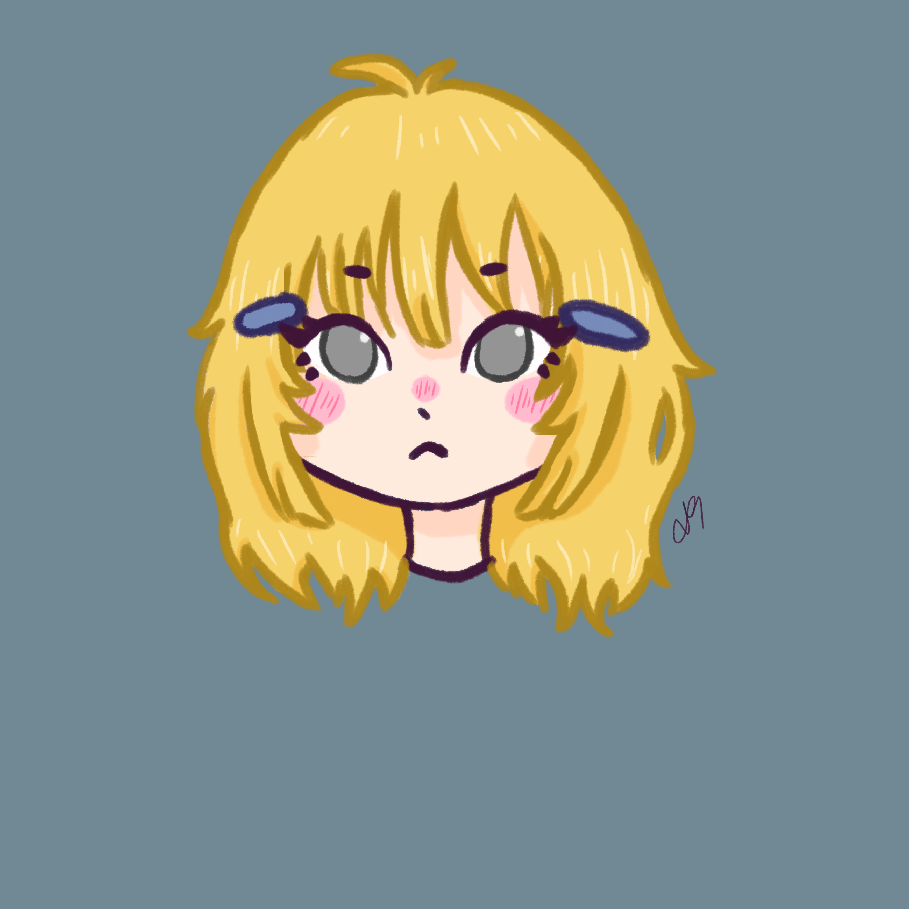
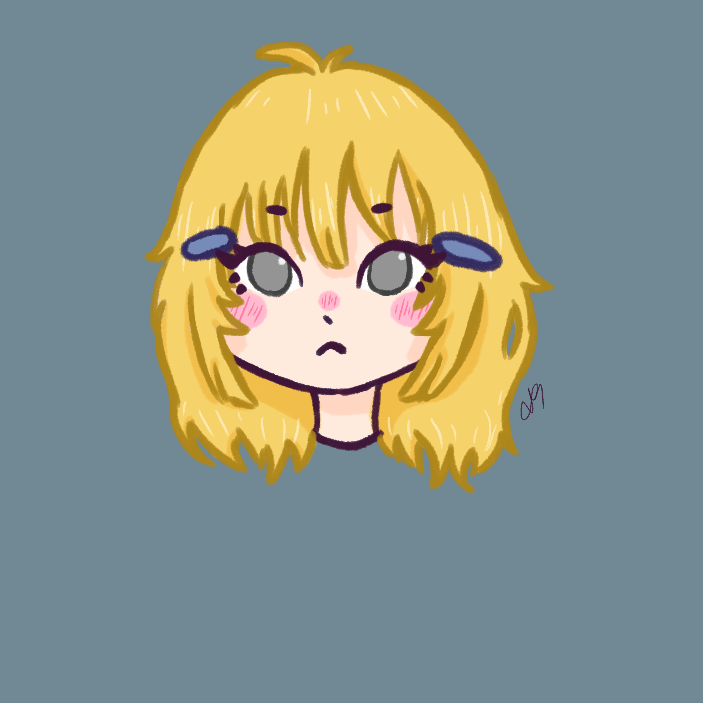

While Hitoku is the youngest in her friend group, she looks even younger than she really is. She is very emotionally distant and hides her
emotions due to former trauma and emotional abuse. She was assaulted by her father who succumbed to his alcoholism after her mother died
in a car crash. She once pushed her father away in order to defend herself, making him fall and hit the back of his head. He died afterwards, caused by the lack of medical attention
and Hitoku barricaded herself in her home for a few months, making her lose weight to an extremely dangerous level. She was too scared to tell anyone that
she killed her father and, in the end, she had to eat his corpse in order to survive. Afterwards she couldn't stand being at home anymore and
started to go to school again. Her friends don't know anything about that.

 
